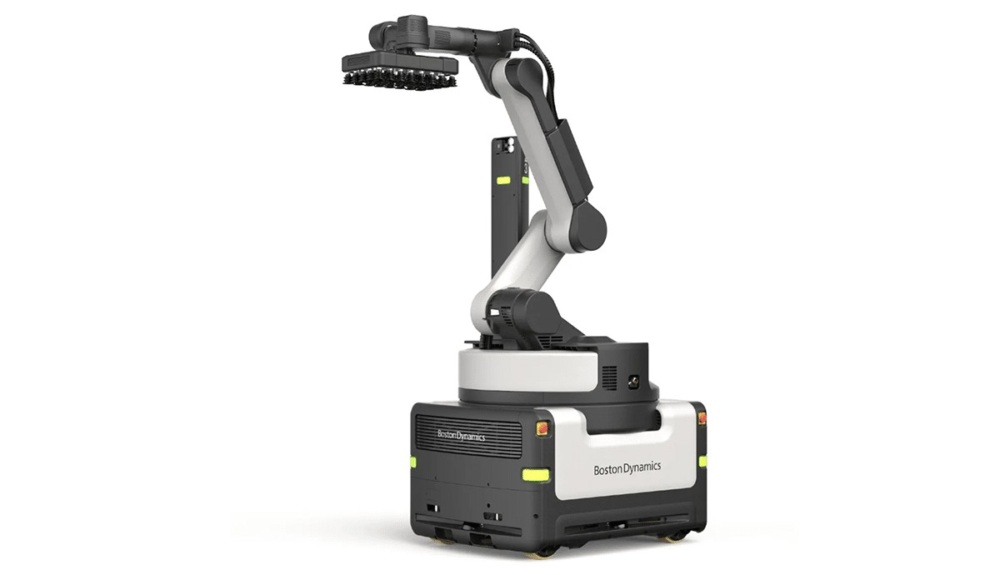

识别、抓取、放下要接上分拣节奏
Stretch的既有卸货流程从识别车厢内的箱子开始，机械臂抓取后放到输送带。官网说明多箱抓取会逐个释放，并保持适合后续分拣的间距，因此一次挥臂能拿几箱还不是全部表现。若下游来不及处理，机器人快速搬运也可能只是把等待移到输送带。对仓库使用者，试点应覆盖真实箱型与不同堆放状态，并同时观察输送带接收、箱体完整性与人工介入。第二代延续这条物理任务链，不能把此前已存在的抓放能力重新包装成本次全部新增；新的重点是让这条链更少中断。
Boston Dynamics Stretch Gen 2 · 物流机器人 · 官方硬件迭代

Stretch的既有卸货流程从识别车厢内的箱子开始，机械臂抓取后放到输送带。官网说明多箱抓取会逐个释放，并保持适合后续分拣的间距，因此一次挥臂能拿几箱还不是全部表现。若下游来不及处理，机器人快速搬运也可能只是把等待移到输送带。对仓库使用者，试点应覆盖真实箱型与不同堆放状态，并同时观察输送带接收、箱体完整性与人工介入。第二代延续这条物理任务链，不能把此前已存在的抓放能力重新包装成本次全部新增；新的重点是让这条链更少中断。
第二代公告把内部线缆缩减列为主要改动，同时提到连接器、关节与抓手的改进。线缆减少本身不是用户的最终产出，价值要通过更少故障定位、维修和复机体现。对于每天重复搬箱的机器，执行动作和移动都反复作用于机械与电气连接，设计细节因此会影响班次是否连续。现场验收可把停机按原因分类，区分识别问题、部件故障、外围设备等待与人为停止；只有这样，才能知道新结构改善的是哪类中断。厂商提供的是改版依据与目标，本次没有独立故障率数据，不能据此算出确定的可用率提升。
官方给出的具体例子是一套转向驱动的更换约需一小时，过去约一天。这个例子有助于理解模块化维护，但不能扩展成任何故障都能一小时解决。停机后先要确认原因、取得正确备件、安排人员，换好之后还要检查是否能重新投入工作。Stretch Care原有服务说明包含技术支持、现场维修、软件更新与计划维护；第二代增加可维护性，不表示这些服务从此不需要。采购时应明确本地团队能完成哪些任务、哪些仍需外部工程师，以及备件与培训如何提供，避免把机械换件的计时直接等同于完整恢复周期。
公告的每小时最多一千箱取决于箱重与堆放整齐程度，不能用峰值乘以班次长度来承诺每日产出。更合理的比较是同样一批货，从开始准备到卸完并恢复月台所需的时间，同时记录人工协助与异常恢复。机器持续工作得越久，短暂故障、供料不一致与服务等待越可能改变最终结果。十一月三日属于第二代发布；价格、具体交付计划及旧设备能否升级没有在所读材料中说明。对现有客户，最有用的下一步是拿自己的停机记录与供应商逐项对照，确认新改动是否针对真实损失，而非只追求更高的标称速度。